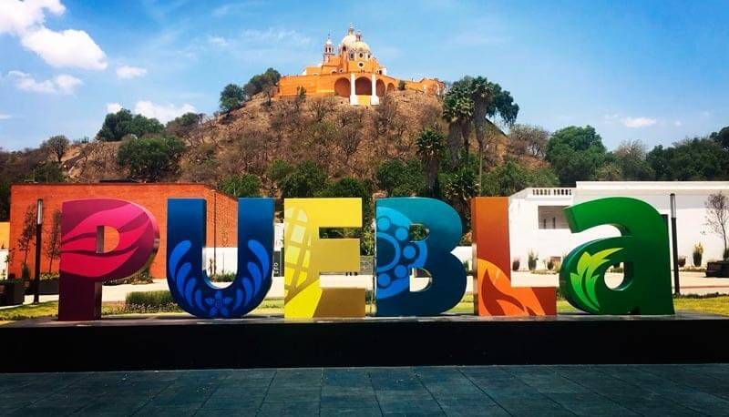
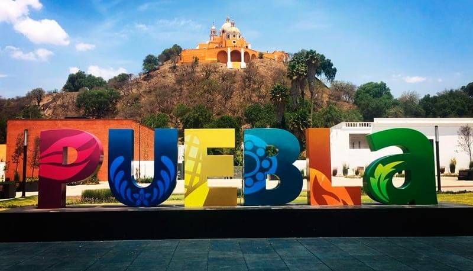

RESEÑA HISTÓRICA
Lo que ahora es el Estado Libre y Soberano de Puebla, fue habitado por grupos humanos de diferentes etnias. Se han estudiado 454 sitios prehistóricos en el Valle de Tehuacán; el más antiguo es Ajuereado. Hay evidencia de familias nómadas que vivieron hace 10,000 años antes de Cristo. Se han encontrado utensilios de piedra y tejidos que datan de 6,500 a 4,900 a de J.C. La agricultura aparece antes de los 3,500 a 2,000 años a.de J.C. y se había extendido por Aljojuca, Totimiuacán, Cholula e Izúcar. La irrigación agrícola surge de 900 a 200 años a de J.C., se cultiva maíz, frijol, calabaza, chile, algodón huautli (alegría). Del 1,520 al 700 a de J.C. se establece el comercio, las invasiones, la construcción de chozas y altares.
Celebraciones en Puebla
Temporada de Chiles en Nogada, Día de Muertos en Huaquechula, Puebla, Culto al maíz en Ixcaquixtla Puebla, Festival de globos de papel de china de Zongozotla y Tuzamapan de Galeana, Feria del árbol y la esfera en Chignahuapan, Puebla, Feria de la manzana en Zacatlán, Puebla, Carnaval de Huejotzingo, Puebla, Desfile conmemorativo a la Batalla de Puebla.
Club Puebla
El Club Puebla, equipo mexicano que se formó en el sector amateur en el año de 1944, fundado en su mayoría por empresarios españoles residentes en la ciudad de Puebla quienes lograron la integración de una nueva institución a la Liga Mexicana de Futbol. En el Campo Mirador arrancó la mejor etapa de desarrollo del fútbol en Puebla, y fue a la postre el primer hogar de los entonces apodados “Millonarios del Puebla”.
El ultimo titulo cosechado por este equipo fue en 2015 en la super copa mx.